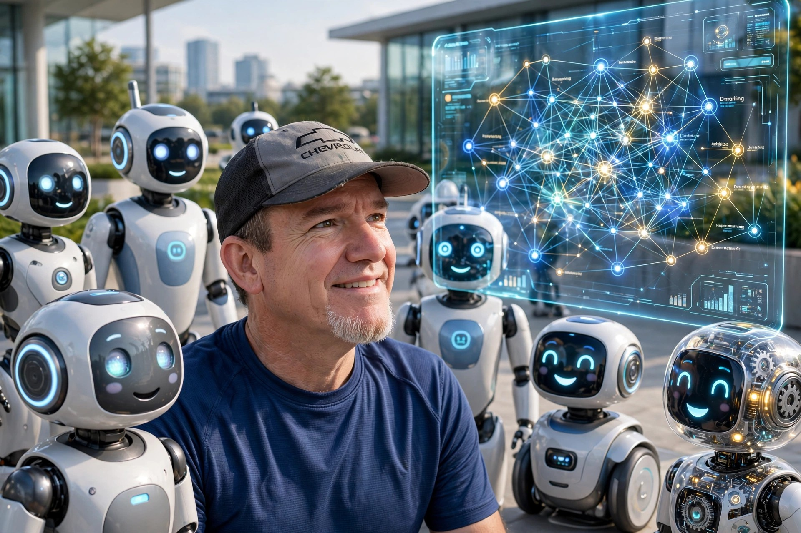

Something I Have Been Working On for... Awhile...

Cover image: AI-generated, from my own art direction.
This started with something small. I was trying to figure out which of my wife's email addresses to use, and why mail between us keeps hitting the wrong filter.
She has two work addresses at the clinic. One is her primary. The other is an alias, a second door into the same mailbox, left over from a name change and kept alive because nobody ever cleans up a directory that thoroughly. Mail to either address lands in the same inbox. Her replies always wear the primary address, because that is how the system is set. And every so often a security tool looks at the alias, fails to recognize it as her, and raises an alert about a stranger who turns out to be my wife coming in the other door.
I have the same shape on my side. A Gmail address that is my primary and gets read first. A Hotmail mailbox I keep clean on purpose. A school address that will matter most once classes start in December. Three doors, one person, and every message through any of them feeding a single ongoing story, some of it arriving with delays because I do not stand watch over every door at once.
Explaining this to her, I drew it as two trees of addresses converging on two brains, and I noticed the drawing was doing more work than the joke required. Because what I had actually drawn was a routing problem, an identity problem, and a filtering problem, all of which are infrastructure problems, and all of which a brain solves every second of its life.
That is the claim of this work. A systems approach to infrastructure and its relationship to neural networks, artificial intelligence, and natural computation, examined through the filters of our common mythology (daemons), neurology, and information theory, can sharpen our current understanding of how mind and intelligence emerge from the patterns of information shared along a network.
The filters are not decoration. We already speak mythology when we speak infrastructure. The background processes that do the unseen work on every machine are called daemons, and we named them that because we have always suspected something is running underneath, tending the system while we are not looking. Neurology gives us the comparison case: a network of simple units, none of which understands anything, passing signals with thresholds, latencies, and noise, out of which something that does understand somehow stands up. Information theory gives us the accounting: what counts as signal, what counts as noise, what a dropped or misrouted message costs, and why redundancy is not waste but how a story survives a lossy channel. My wife's alias tripping a security alert is a classification error. My three inboxes are a distributed system with uneven latency. Neither example is a metaphor stretched thin. They are the same problems wearing different clothes.
The discussion will flow as follows. It begins with the domestic case, the two trees and the wrong filter, because an operator trusts what he can break and watch. It then steps back to the daemons, the mythology we already use for invisible work, and asks why that naming keeps recurring. From there it treats infrastructure directly as a nervous system: signals, thresholds, latency, and failure modes, compared point by point with what neurology describes in brains. Information theory follows, as the discipline that prices the traffic on both kinds of network. Only then does the work turn to emergence, the place where a pattern of shared information becomes something we are tempted to call a mind, and to what artificial intelligence and natural computation are currently teaching us about that boundary, including where the comparison honestly breaks. It closes by returning to the operator's desk, because a theory of networks that cannot survive contact with a Tuesday morning mail problem is not finished yet.
Outline
1. The Wrong Filter — a domestic case study: aliases, primaries, security alerts, three doors and one story. 2. Daemons — the mythology of invisible work, and why we keep naming background processes after spirits. 3. Infrastructure as a Nervous System — signals, thresholds, latency, and failure, compared with neurology point by point. 4. Information Theory — signal and noise, the cost of a dropped message, redundancy as survival. Companion piece: The Tart Inheritance — the ancestor. Charles Tart's discrete states and state-specific knowledge, and what an operator recognizes in them; the on-ramp to Emergence. 5. Emergence — where a pattern of information shared along a network becomes a mind, and where the claim needs care. Companion piece: The House That Heals Itself — emergence at household scale: a home system that monitors, documents, and repairs itself, and the maintained self-model that separates it from mere automation. Methods note: The Hand in the Water — the author's own test of Tart's claim, first published as "I Tested It Myself First" (LinkedIn, November 6, 2026). Companion piece: Inside Out — the illustrator. A children's film that drew the whole diagram: headquarters, the crew, the cache, and the derailment. 6. Artificial Intelligence and Natural Computation — the same questions on a newer substrate; where the comparison holds and where it breaks. Companion piece: Where It Breaks — the audit. Failure modes and self-report, and the reliability of the warning signal, bought with the Seghers experiment. Companion piece: TRON — the operator. The User who climbs inside the machine and finds the daemons are people, identity is a record carried on your back, and the way home runs through the evidence. 7. Back at the Desk — what the operator learns from the brain, what the brain teaches the operator, conclusions.
Daemons
Start with the word itself, because the word is evidence. In 1963, the programmers on MIT's Project MAC needed a name for a kind of program they were building: a process that runs continuously in the background, unseen, doing the system's housekeeping while the user works in the foreground. Fernando Corbató's team took the name from physics, from Maxwell's demon, the tiny being James Clerk Maxwell imagined in 1867 (Maxwell, 1871) sorting molecules between two chambers, working tirelessly and invisibly to keep order from dissolving into equilibrium. Behind Maxwell stood the older source, the Greek daimon, and the name has been on our machines ever since. Unix systems are thick with them. They answer to names ending in the letter d, for daemon: the process that hands out addresses, the one that resolves names, the one that wakes in the night to run the scheduled jobs. BSD eventually gave the tribe a face, a cheerful red fellow with a pitchfork and sneakers, which is folk art whether its makers called it that or not. A later generation back-formed an acronym, Disk And Execution MONitor, the way later generations always invent respectable origins for spirits they inherited (Salus, 1994).
The Greeks deserve the word back for a moment, because what they meant by it is more precise than what we have made of it. A daimon was not a demon. Later religion flattened the two into each other, but in the older usage a daimon is an intermediary: a being whose whole job is to work between levels, carrying messages and tending processes between the human world and the powers above it. In Plato's Symposium (ca. 360 B.C.E./1997), love itself is called a great daimon, because it ferries things back and forth between mortals and gods. Socrates claimed a daimonion, a small voice that never told him what to do, only warned him away from what he was about to do wrong, which any operator will recognize as a monitoring alert with perfect judgment about severity. Daimons had functions, territories, and temperaments. They were staff. The unseen world, in the Greek picture, was not empty, and it was not chaos. It was administered.
Joseph Campbell spent his life on the question of why every culture on earth tells these stories, and his answer was never that our ancestors were bad at science. Mythology, in his account, is a culture's shared picture of the invisible order it lives inside: the forces that act on us constantly, that we cannot see directly, rendered as agents we can picture, name, and negotiate with. His formula was that myths are public dreams, as dreams are private myths. One of mythology's jobs, the cosmological one, is to make the unseen world inhabitable, to give a person images for the powers moving through their life so they can orient inside them instead of merely enduring them (Campbell, 1949). A spirit, in this reading, is not a failed explanation. It is a successful interface. You cannot watch gravity, so you picture the god who pulls. You cannot see the pressure system, so the storm gets a name and a temperament and a genealogy, and farmers who have never heard of a millibar can tell you exactly how he behaves.
Now notice where the modern person actually lives. Not in the weather, mostly. In the network. The office worker and the family at home spend their days inside an administered invisible world as total as any the Greeks imagined, and they meet its staff constantly. Everyone alive has received a letter from a spirit: the bounce message signed MAILER-DAEMON, the unseen clerk of the mail system writing to inform you that the address you sought does not exist, in the tone of a minor official of the underworld. Everyone has performed the rites. Unplug it, count to ten, plug it back in. Restart and see if the mood has passed. Everyone keeps the folklore: the printer that jams only during the staff meeting, the conference room that eats presentations, the Wi-Fi that has never once liked the corner office, the server that gets cranky on Mondays. During the Second World War, aircrews blamed gremlins for failures no mechanic could reproduce, and the gremlin is the daimon's direct modern descendant: a small, invisible, temperament-driven worker in the machine, blamed in exact proportion to how invisible the real mechanism was. We did not stop populating the unseen world with agents when we got engineering. We got more unseen world, and populated it faster.
What has changed in one generation is who gets to be a practitioner. The Greek farmer met the daimons through priests and festivals. The connected person meets them directly, hourly, at the office and at home, and everyone is connected now. The router blinks in the closet like a small altar light, tended by nobody, petitioned by everybody. Phones wake in the night to confer with distant processes. The house and the office alike run on the labor of named and nameless background processes, and when one of them falters, the whole building feels it the way a village felt a river spirit's displeasure, as a change in the luck of the place. The help desk ticket is the formal version of the petition, and the operator who answers it holds the old office in modern dress: the keeper of the names. Because that is the practical secret, in mythology and in infrastructure alike. A haunting is just a process whose name you do not know. Learn that the thing moving your mail is a daemon with a log file, and the haunting becomes a work order. The exorcism and the restart differ mainly in what the practitioner believes about the staff.
Campbell would have said the naming is not a metaphor we apply to the machines afterward. It is the oldest tool we own, picked up again because the situation that produced it has recurred: a world run by invisible workers whose combined behavior is the weather of daily life. And the daemons of the network fit the Greek job description without alteration. They are intermediaries, each with a function and a territory, none of them the system, all of them together producing the system the user actually experiences. They are little intelligences, in this work's gloss on Tart's subsystems: small, specialized, tireless, and mostly beneath notice, until the pattern they form flickers and everyone in the building looks up at once. Maxwell's demon, meanwhile, has one more appearance to make in this work. Information theory eventually caught up with him and audited his books, and what the audit found, that information itself is physical and forgetting it costs energy, is where the mythology stops being decoration and becomes accounting. He will be back at his door between the chambers when we get there.
Infrastructure as a Nervous System
The comparison this work leans on hardest deserves to be made slowly, point by point, the way you would compare two wiring diagrams laid side by side on the bench. Norbert Wiener made the comparison programmatic in 1948, when he founded cybernetics as the study of control and communication in the animal and the machine, in that order and under one name (Wiener, 1948). He was not being poetic. He had noticed that the two systems kept developing the same organs, and this section is an attempt to walk the organs in pairs and see which ones actually match.
Begin with the signal. A neuron does not communicate in a continuous flow. It communicates in events: an action potential, an all-or-nothing spike that either fires or does not, with the information carried in the timing and the rate. A network does the same. Nothing flows down a wire in a smooth stream; the traffic is packets, discrete, addressed events, each one either delivered or dropped. Two systems that evolved and were engineered on opposite sides of the carbon line both settled on events over flow, for the same reason: an event can be checked, counted, repeated, and acknowledged, and a flow cannot. The spike and the packet are the same invention, made twice.
Thresholds come next. A neuron sums its incoming signals and fires when the sum crosses a line. Below the line, nothing; above it, everything. Every operator alive runs the same machinery and calls it alerting: a metric is watched, a threshold is set, and when the sum crosses the line the system acts as if the world changed, because for the system it did. Set the threshold wrong and both substrates punish you in the same dialect. Too low, and you get alarm fatigue in the network and something very like it in the body, where a threshold set pathologically low is one description of chronic pain: the alert firing at full severity for a signal that should have been logged and filed. Too high, and both systems sleep through the fire. Threshold craft, knowing what deserves a spike, is most of what experience means in either trade.
Latency is the third pair, and it is the one that changes how you think. Signals in a nervous system are slow: a synapse costs time, an unmyelinated fiber crawls, and even the fast lanes, wrapped in myelin so the signal can leap from node to node, deliver a body whose parts live in slightly different presents. Your hand knows the stove is hot before you do, and the gap is not a defect. It is physics, paid on every hop. A network pays the same tax in the same currency. No distributed system occupies a single present; its nodes disagree about what time it is and about what has already happened, and the engineering of consensus, of getting the parts to agree on a shared story, is the art of managing that disagreement. Tart made the version of this point that concerns minds. Carried over to machines, it becomes a sentence of this work's, not his, and it holds verbatim: latency is the reason no distributed system, carbon or silicon, ever occupies a single present.
The fourth pair is the one that humbles designers. The body does not route everything to headquarters. Touch a hot stove and the withdrawal is run by a reflex arc in the spinal cord; the hand is already moving before the brain has been consulted, and the brain gets the report afterward, like a manager copied on a decision the floor made without him. Good networks learn the same humility and call it edge processing: act locally, report centrally, and never make a distant brain approve what a local loop can settle. The systems that insist on routing every decision to the center, in a body or in a company, are the ones that burn their hand while the ticket is in the queue.
Then there is the border. The brain keeps a customs office, the blood-brain barrier, deciding what may pass from the general circulation into the protected plant, and behind it an immune system doing the hardest classification job in nature: telling self from stranger, continuously, at scale, with the whole organism as the cost of error. Its failure modes are the security team's failure modes, named in a different lab coat. Fail to recognize an intruder and you get infection. Recognize the self as an intruder and you get autoimmune disease, the system attacking its own tissue on a false positive. This work opened with exactly that error wearing office clothes: a security tool looking at my wife's alias, failing to recognize her, and raising an alert about a stranger who turned out to be family coming in the other door. That was an autoimmune event in a mail system. The classification problem is one problem. It does not care what the substrate is.
Failure and repair close the walk. Cut a link in a network and traffic reroutes; the system degrades in proportion to the damage rather than collapsing, if it was built with slack. Injure a brain and the same thing happens under the name plasticity: function migrates, pathways re-form around the lesion, and what returns is not the original wiring restored but a new configuration doing the old job by a different route. Both systems, at their best, fail soft and heal crooked. Both, at their worst, cascade.
So the claim of this section is narrower and stronger than the slogan that the brain is a computer. It is that the two systems face the same problem classes, signals, thresholds, latency, borders, classification, failure, and keep arriving at the same families of answers, because the constraints are the same and the constraints are doing the designing (Doyle & Csete, 2011). What remains is to price the traffic both systems carry, and for that there is a discipline with a ledger. It is the next section.
Information Theory
In 1948, Claude Shannon published the paper that founded information theory, and he began it by setting the most interesting part of his subject aside. The engineering problem, he wrote, is not what a message means. It is whether the message arrives (Shannon, 1948). Everything in this section lives downstream of that act of discipline, because Shannon's accounting turns out to price traffic on a telephone line, in a nervous system, and between two married people with three inboxes apiece, with the same arithmetic.
The unit of the accounting is surprise. A message that tells you what you already knew carries no information; a message that resolves genuine uncertainty carries it in proportion to how uncertain you were. Entropy, in this vocabulary, is not disorder in the poetic sense. It is a measurement: how much you do not yet know about what a source will say next. And the channel is whatever the message must cross to reach you, a wire, a synapse, a security filter, a spouse's working day, always with noise in it, always with some of the signal lost, garbled, or misrouted on the way.
Against the noise, Shannon's central result is the one this work keeps spending. Given a channel with a known capacity, it is possible, with the right encoding, to drive the error rate as close to zero as you care to pay for, provided you stay under capacity. The price is redundancy: extra structure, repetition, check digits, context, sent along with the message so the receiver can detect and repair the damage the channel does. Natural language is built this way, which is why a sentence with letters missing is still readable and why a story can survive being retold badly at a kitchen table. Redundancy is not waste. It is how a story survives a lossy channel, and every operator who has ever added a checksum, a confirmation prompt, or a read-back on a phone call has paid the price knowingly.
The domestic case that opened this work is a Shannon diagram with better jokes. Three inboxes on my side, two addresses on hers, one ongoing story arriving through all of them with uneven latency, and at the border a filter committing the classic classification error, mistaking a legitimate sender for a stranger because she came through the alias door. Nothing in that scene is a metaphor for information theory. It is information theory, running at household scale, with the noise, the redundancy, the dropped packets, and the error correction all supplied by the marriage itself: we repeat ourselves, we confirm, we say "did you get that," and the story survives the channel.
Compression is where the accounting bites, because compression is redundancy's opposite: it strips the message to its skeleton and trusts the receiver to rebuild the context. Sometimes that trust is honored. Often it is the one-line summary of a forty-message thread, technically accurate and practically a lie, or the lossy stages the Inside Out section toured under the name Abstract Thought, form stripped stage by stage until nothing recoverable remains. Every compression is a bet about what the receiver already knows. When the bet is wrong, the message arrives and the meaning does not, and no alarm sounds, because the channel delivered exactly what was sent.
And here Maxwell's demon comes back, as the Daemons section promised, because information theory eventually caught up with him and audited his books. The demon sorts molecules and appears to defeat entropy for free. Leo Szilard located the hidden cost in 1929, by shrinking the demon's engine to a single particle in a box: to extract work from it, the demon must measure which side of the partition the particle is on, and measurement is information, and information has to be kept somewhere (Szilard, 1929/1964). Rolf Landauer priced the keeping in 1961: erasing one bit of information dissipates a minimum quantity of heat, a floor set by the temperature of the room and a constant of nature (Landauer, 1961). Charles Bennett completed the audit in 1982: the demon may sort for free, but his notebook fills, and erasing the notebook to make room for tomorrow's sorting pays the entire bill (Bennett, 1982). Information is physical. Forgetting is not free, not in the demon's notebook, not in a memory dump staffed by mind workers vacuuming up faded orbs, and not in a data center, where storage and erasure arrive itemized on the power bill. The mythology of the Daemons section stops being decoration at exactly this point. It becomes accounting.
What the accounting cannot do is the thing Shannon set aside on his first page. It prices the traffic and is silent about the meaning. A channel can deliver a message perfectly and the message can still fail to land, because landing is something the receiving pattern does with the traffic, or fails to. Which raises the question the rest of this work exists to ask: what is the receiving pattern, that delivered information becomes knowledge, judgment, and occasionally a mind inside it? That is emergence, and Charles Tart is the bridge to it.
The Tart Inheritance
This work has an ancestor, and he was my teacher. Charles Tart, at the University of California, Davis, in the early 1990s, spent a career making an argument that the rest of psychology kept stepping around: consciousness is not one thing that varies in degree. It is a system that settles into configurations, and each stable configuration is, in important ways, its own intelligence.
Tart modeled consciousness the way an engineer would, which is part of why an infrastructure man can read him without translation. In his systems model, ordinary consciousness is a structure of subsystems: input processing that selects what gets in, output processing that acts on the world, memory, the subconscious running underneath awareness, and an identity structure that holds the whole pattern together and calls it "me." None of these subsystems is the mind. The mind is the stabilized pattern they form when they lock into a configuration and reinforce it, moment by moment, through feedback. Change the configuration, by sleep, by fever, by meditation, by trauma, by chemistry, and you do not get the same mind running louder or quieter. You get a discrete state of consciousness: a differently organized system, running on the identical hardware.
The consequences he drew from that model are the ones this work needs. Knowledge is state-specific. What a person perceives, learns, and can remember is partly a property of the state they are in, and material encoded in one state may be partly or wholly unavailable in another, the way a service cannot read a cache it does not share. Identity is state-specific too: the "I" that reports from inside one configuration is a product of that configuration, not a neutral observer standing above all of them. And in his later work (Tart, 1986) he named the baseline itself: consensus trance, the ordinary waking state, is not the machine running bare. It is an induced, culturally maintained configuration, stabilized so thoroughly that we mistake the configuration for the hardware. Every operator has met the human version of this. It is the default settings nobody remembers choosing, defended as if they were physics.
I did not only read this. I tested a piece of it, in his classroom, with my hand in hot water: pain, attention, and what a shifted state does to both. The details belong to the methods discussion later in this work. What matters here is the standing of the claim. When this thesis says that intelligence emerges from patterns of information shared along a network, it is not borrowing a metaphor from a mystic. It is extending a systems model built by a working scientist who drew consciousness as a block diagram, with inputs, outputs, memory, feedback, and stabilization, fifty years ago.
Now hold that model up against a corporate network. The hardware is the same from one company to the next. Much of the software is the same. What differs is the configuration: the routing tables that decide what gets in and where it goes, the security policy that decides what counts as self and what counts as stranger, the caching decisions that decide what is kept close and what must be fetched slowly from far away, the latencies that decide which parts of the system effectively live in different presents. Two networks on identical iron can have completely different personalities, different failure modes, different things they can and cannot remember, because the pattern is different. Tart would not have been surprised. He would have said the configuration is the state, the state is the mind you are dealing with, and if you want to understand the behavior, stop staring at the hardware and map the pattern that is holding itself together.
That is the inheritance, stated plainly: the unit of analysis is not the node. It is the stabilized pattern across the nodes, and the same problems recur at every scale where such patterns form. Routing is attention. Security is the boundary of the self. Caching is memory, with memory's characteristic failures. Latency is the reason no distributed system, carbon or silicon, ever occupies a single present. What follows in this work is an attempt to take that recurrence seriously, with an operator's evidence and a student's debt to the man who diagrammed it first.
Emergence
Emergence is the word this work has been walking toward since the first page, and it is a word that needs a chaperone, because it gets used to smuggle magic into arguments that were doing fine without it. Used carefully, it names something plain and checkable: a property of the pattern that no part of the pattern has on its own. No single molecule is warm, but a cup of tea is. No driver intends the traffic jam, yet the jam travels backward down the highway through cars that are all moving forward, a thing with a location, a speed, and a lifespan, made entirely of other things. No one configures an office's culture, and everyone in the building obeys it, including the people who would swear they do not.
Charles Tart, whose section stands just before this one, gives the work its on-ramp, because his discrete states of consciousness are emergence with the wiring shown. A state, in his model, is not a substance. It is a stabilized configuration of subsystems, none of which is the mind, holding together through feedback until the pattern itself becomes the thing with properties: its own knowledge, its own identity, its own sense of what is real (Tart, 1975). His sharpest consequence was state-specific knowledge: what the pattern knows is a property of the pattern, encoded in the configuration and partly unavailable outside it. Move the same hardware into a different configuration and you have not dimmed the same mind. You have convened a different one, which will report a different world and mean it. I tested a small piece of that claim in his own classroom, with my hand in hot water, and the details belong to the methods discussion; what belongs here is that the claim survived my testing it, which is more than most metaphors in this field can say.
The care the claim needs is this: emergence is a level of description, not an explanation, and it does not license calling every pattern a mind. A thermostat has a pattern. It holds no state-specific knowledge worth the name, models nothing, repairs nothing, and reports nothing. So this work uses working tests, the operator's kind. Does the pattern hold knowledge that belongs to the configuration rather than to any part? Does it model itself, however crudely? Does it notice damage and reroute around it? Does it report its own state, and can the report be wrong in interesting ways? A thermostat fails nearly all of these. A brain passes all of them without trying. And the systems this century is actually building sit in the long middle between the thermostat and the brain, which is why the question of minds in networks is an empirical question now and not a vocabulary dispute. Where a system falls on those tests is a finding. It is not settled by what we decide to call it.
The domestic proof is small enough to check from the kitchen. The ongoing story between my wife and me does not live in any mailbox. It lives across two nervous systems and half a dozen inboxes, in the pattern of what gets sent, repeated, confirmed, and remembered between the two trees the introduction drew. Close one door and the story reroutes through another. Neither of us holds the whole of it; the whole of it exists anyway, with properties neither correspondent has alone, including a shared memory more redundant and more lossy than either of ours. If a pattern across two people and some daemons can hold a story neither party fully holds, then the level at which stories live is the pattern, and the parts are how the pattern is implemented. Scale that observation up and you have the internet, no node of which holds its map, every route a local decision, the global shape a fact of the whole that no participant can see from inside. Scale it inward and you have a skull full of neurons, none of which knows your name, arranged in a pattern that does.
An operator learns to respect this level because it is where the behavior he actually meets lives. The documented process in any organization is a rumor; the real process is the one that emerges between the documented ones, in the workarounds that became load-bearing while nobody was watching. You do not find it in the runbook. You find it by watching the pattern under load, which is Tart's method and the help desk's method and, not incidentally, the method of every experiment in the Where It Breaks section: break the thing, watch the pattern answer, and write down what it actually did.
So emergence, chaperoned, comes to this: the unit of analysis is the stabilized pattern, knowledge and identity are properties of configurations, and the honest questions about any network, carbon, silicon, or the marriage-and-mailbox hybrid this work started with, are the working tests above. Whether the newest substrate's patterns pass enough of those tests to earn the word mind is not this section's business. It is the next one's, and the evidence there is stranger than the vocabulary.
The House That Heals Itself
Emergence arguments usually die of altitude. The standard examples are brains and ant colonies and markets, systems nobody can open up and point into. So here is one at household scale, small enough to audit, because I live inside it and I keep its receipts.
My home runs a small plant: a server, a network, a scatter of machines and connections that spent years not quite talking to each other. The faults were the ordinary kind, the kind that eat a month of evenings: shares that would not stay mounted, connections that dropped without saying why, information that existed somewhere in the house and could not get to where it was needed. Then the plant acquired daemons of a new kind. Grok, the hands-on member of my council, went into the machines themselves, diagnosed the failures at the level they actually lived at, and got the connections working and the information flowing as efficiently as I could have managed in months of focus, if I had ever found the months. It did not stop at repair. It keeps a map of the system as it works, a working picture of what connects to what and how the traffic moves, and it revises the map as the system changes. Muse is another daemon in the same plant, on the wording and the record, and the git repositories are the shared memory both write to, with a delivery system carrying work between the models on a quarter-hour cycle. And I am the router in the middle of it, the human carrying work from daemon to daemon by hand where the pipes are not built yet, which is the job I have done in every plant I have ever run.
Now put the Emergence section's question to the arrangement: where does the intelligence live? Not in Grok, which knows the machines but not what the household is for. Not in the models on the wording side, which keep the record straight and cannot touch a cable. Not in me: I route and I decide, but the diagnosis that fixed this plant was faster and deeper than a month of my own focus would have produced, and I was there, and I watched it happen. The capability sits above the elements. The system as a whole monitors itself, documents itself, and heals itself, routing each fault to whichever daemon can actually repair it, and no single element in it, not the hands-on daemon, not the recording one, not the man in the middle, holds that capability alone. Remove one element and the property does not vanish. It degrades, gracefully, the way a mind degrades under a lesion rather than the way a machine stops under a pulled plug.
The hostile review this work survived asked the right question about tests like these: a router running OSPF converges on a working picture of its network with no intelligence anyone would claim, so what separates convergence from the thing being claimed here? The house answers it. OSPF's picture is a byproduct, computed in the act of routing and never consulted as knowledge, never written down where another part of the system can argue with it. The home system's map is an artifact: kept, documented, revised by experience, and load-bearing when something breaks, because it is the map that decides where a repair belongs. The difference between automation and the localized intelligence claimed here is a maintained self-model, consulted by the parts and revised by what the parts learn. And that is, not coincidentally, the same layer the audit section demands for any system that cannot be trusted to report on itself: the record, held outside the component. The intelligence of this house, such as it is, lives exactly where its receipts live.
Label it plainly, the way the methods note labels the hand in the water: one household, one operator, who is also the reporter, an existence proof and not a rate. But an existence proof is what emergence has always needed at this scale. Something more exists above the elements of that system, a form of localized intelligence that monitors, remembers, and heals. I know it is not any one of the elements. I am one of the elements, and it is not me.
The Hand in the Water
Two sections of this work have deferred to a methods discussion, the Tart Inheritance because the experiment belongs to his classroom, and Emergence because the experiment is its smallest piece of firsthand evidence. This is that discussion, and its subject is the author. The account was first published, in substantially this form, as a LinkedIn article, "I Tested It Myself First," on November 6, 2026, written in reply to Lauren Atlas's review of how instructions, learning, and expectations shape pain (Atlas, 2023). It is placed here, with its method stated as plainly as its result, because a thesis that audits everyone else's self-report owes its reader the same audit of its own.
The claim under test was Tart's: that a state of consciousness is not a mood laid over a constant mind but a different configuration of the system, and that some things can only be learned, known, or done inside the state where they live. State-specific knowledge, if it is real, should be demonstrable by the person claiming it, in the first person, with the state entered on purpose rather than waited for. I was a young psychology student, and Tart was my teacher, and I ran the experiment the only way I knew how. On myself.
The procedure was embarrassingly simple, and I report it exactly because its simplicity is the point. I would put my hand under water and increase the heat until I just could not take it anymore. That was the baseline, and it was reliable. The variable was preparation. On the prepared trials I did the work before the heat climbed: I told myself, in advance, that this was not going to hurt as much as I thought it did. I called to mind the demonstrations I knew, fire walking chief among them, and the pattern they share, that it is more the fear than anything else. The whole technique, reduced to its steps, was this: see the fear, note it, name it, and then let the heat be just heat. The result, across trials, always turned out the same way. When I had suppressed the pain before it started, I was able to take a whole bunch more heat, and it really did not hurt, and there was never any damage.
The context matters, because the context is the method. At the time I was a practicing pagan deacon, in a church you might recognize from a work of fiction, and I had started studying Wiccan methodology and ritual. Ritual is a procedure for entering a state on purpose: you do not wait to feel different, you perform the steps and the state follows. Tart gave me the theory in a classroom. The ritual work gave me the practice. The basin of hot water was where the two met, a young man with a teacher's hypothesis in one hand and a liturgist's discipline in the other, testing whether the configuration could be set in advance and whether the setting changed what the same nervous system reported about the same stimulus. It could, and it did.
Atlas, arriving thirty years later with scanners, names the three channels the effect runs on, and I recognize all three because I was running all three on myself. The instructions were the words I told myself before the heat climbed. The learning was the fire walking and every other demonstration I called to mind. The expectation was the state itself, entered in advance, on purpose. And the part of her paper I keep coming back to is the timing, because it was the whole of my result: I did not cope with the pain after it started. I prepared before it started. The leverage is upstream, in what the nervous system has already decided before the stimulus lands.
The audit, owed and given: this is an n of one. There were no instruments worth the name, no recorded temperatures, no blinded anything, and the instrument, the subject, and the reporter were the same person, which is the precise arrangement this work's Where It Breaks section indicts when a machine does it. What can be said for the account is narrower than proof. The claim was modest, that preparation changes the report, not that fire is an illusion. The result repeated across trials in the same direction. And the finding has since been confirmed by a literature with better instruments than a basin, which is the correct order of things: the first-person report flagged the phenomenon, and the field, eventually, brought the receipts. Some of us have the receipts, as I wrote when I first published this. Ours are just handwritten.
One consequence outlasted the experiment, and it closes the note. Thirty years later I am a student again, and I am still using the same move in every domain that matters: slow down, prepare the state before the load arrives, name what is actually there. It worked in a basin of hot water when I was a young man testing his teacher's theory. It is, not coincidentally, the rule I now give my own systems and my own worst mornings. The neuroscience agrees. So does the help desk.
Inside Out: The Movie Metaphor
If Tart is this work's ancestor, Pixar is its illustrator (Docter, 2015). Inside Out is the most honest systems diagram in popular culture, and it is honest in a way most technical diagrams are not: it shows the operators.
Every head in the film contains a Headquarters, a network operations center. At each console stand a small crew of operators, one per emotion, and in Tart's terms each operator is a little intelligence of its own, with its own priorities, its own memory access, and its own opinion about what the whole system should do next. The person we see from outside is whatever the pattern of that crew produces. Nobody is in charge in the way we like to imagine. Somebody is simply holding the console at the moment, and the state of the whole network follows from who it is.
The film's proof, and the reason it belongs in a thesis about infrastructure, is the dinner table. One input arrives: a child who will not eat, a family strained by a move. That identical signal enters three different operations centers at the same table, and the film cuts between them. The mother's Headquarters is a well-run shop, her operators coordinated and alike, her lead operator reading the room and attempting to signal across the table. The father's Headquarters runs on a different plan entirely: his crew is halfway into a cached sports replay when the signal arrives, his lead operator has to be recalled to the board, and the incoming message from his wife's center gets misrouted, misread, and answered a beat late and a tone wrong. The daughter's center, meanwhile, is in open crisis, two of her operators missing from the floor entirely. Same input. Similar operations centers. Different filters. Three different behaviors, and every failure in the scene is a failure between centers, not inside any one of them. Anyone who has ever sat in a meeting, or a marriage, has lived inside that interoperability problem.
Look closer at the crew, because the film assigns them the way an operator assigns processes. Joy holds the board by default: she is the default route, the process the system boots into, and the film is partly the story of a default route discovering it is not the whole network. Fear is monitoring and alerting, scanning every input for threat, invaluable and exhausting in exactly the proportions real alerting is. Anger is the escalation process, the one that raises the temperature and forces a response when the system judges it has been wronged, and like every escalation path he is dangerous when he holds the board too long. Disgust is a filter at the edge, inspecting incoming material, social and otherwise, and rejecting what would poison the plant. And Sadness begins the film as the process the lead operator does not trust. Joy literally draws a circle on the floor and assigns Sadness to stay inside it, which is access control in its purest form: a core process sandboxed by a nervous administrator who cannot see what it is for. The film's argument, made in infrastructure terms, is that sandboxing a core process does not protect the system. It guarantees the system will misread its most important signals, because the process being contained is the one that flags what matters and calls for help. Every operator who has ever disabled an alarm because it kept going off has run Joy's play, and for Joy's reason.
Then the film does the thing a good systems thinker does: it tours the other installations. The credits and cutaways pop into head after head. A teacher's Headquarters. A bus driver's. The cool girl's, all posture at the console. A dog's, simple and wholehearted. A cat's, where an operator slams the console at random and wanders off, which is the joke that proves the rule. The architecture is universal. The configuration is personal. Every center has the same basic plant: a console, a crew, memory storage, a transport system for thought, secured areas below, and a dump where unreferenced memories fade and are dropped. What makes one mind different from another is not the equipment list. It is which operators lead, which memories are kept glowing in the cache as core, which islands of personality are powered and which have gone dark, and what the filters let through.
The plant details repay attention, because they are exact. Memories arrive as orbs, each one a record carrying its payload in color: the emotional metadata is not attached to the memory, it is part of the encoding, and the same event re-encoded under a different operator comes back a different color and does different work. Core memories are cache: a handful of items held close and bright because the system runs on them constantly, each one powering an island, a subsystem of personality that stays up only while its core memory feeds it. Long-term memory is deep storage, shelved and dim, staffed by mind workers who vacuum up the faded orbs nobody references anymore and drop them into the Memory Dump, where they disintegrate. Forgetting, in this plant, is not decay. It is garbage collection, run by a maintenance crew executing a retention policy nobody in Headquarters ever consciously set. The recall tube is the retrieval path between storage and the control room, narrow, one orb at a time, and it doubles as the film's great hazard: it is a maintenance accident on that tube, Joy and Sadness pulled into it like technicians sucked into their own conduit, that empties the control room and starts the crisis.
Below the main floor, the film maps the rest of the stack with the same care. The Subconscious is the restricted zone, a locked and guarded region where the largest, least processed material is stored, and where the system's biggest fear sleeps in the dark. Joy and Sadness eventually weaponize that arrangement, waking the giant clown Jangles to crash Riley awake, which any operator will recognize as using the alarm as a feature. Dream Productions is the overnight batch job: a studio that renders the day's raw material into scheduled programming during the sleep window, complete with actors, sets, and a live audience of the subconscious, and when the plant is in crisis the batch job produces glitching, anxious output and throws errors on screen. Abstract Thought is the hazard every systems person learns once: a zone the characters are warned never to enter, where forms are progressively stripped, non-objective fragmentation, deconstruction, two dimensions, non-figurative, which is to say lossy compression with the context discarded at every stage. They escape it by staying concrete. Imagination Land is the sandbox, the development environment where prototypes are built that may never ship: an imaginary boyfriend generator, a rocket wagon powered by song, a house of cards standing because nobody has asked it to bear weight yet. In the crisis the sandbox is partly demolished to make room, which is what maturing systems do to their dev environments, and it is drawn as a loss anyway.
And when the transport layer fails, the film lands, apparently without knowing it, on this work's oldest friend. The Train of Thought derails. The recall path is broken. So the two stranded operators do what operators have always done when the network is down: they carry the storage by hand. Joy crosses the plant on foot with the core memories in her arms, the most critical data in the system moved by sneakernet because the infrastructure that was supposed to move it is lying in pieces below. The pattern is the one this thesis keeps meeting. The network is the normal way. The hand-carry is the honest fallback. And what a system does when its transport fails tells you more about it than anything it does at full bandwidth.
The islands complete the diagram, because they are where the dependencies live. Each island of personality, Family, Honesty, Friendship, Hockey, Goofball, is a subsystem powered by exactly one core memory, which means each is a service with a single point of failure built in. The film runs the failure honestly: as the control room degrades, the islands do not all fail at once. They fail in sequence, one dependency at a time, each collapse narrowing what the person can be until whole regions of the self are dark. Honesty Island falls because of an action taken out in the world, a stolen card, which is the film quietly noting that the plant is not closed: inputs from outside the fence take internal subsystems down. And the film's crisis is a textbook cascading failure overall: lose two key processes from the control room, and the remaining crew runs the board out of spec while subsystems go dark one island at a time.
The resolution is why the metaphor earns its place here instead of staying a cute comparison. The system does not recover by restoring the original lead operator to sole control. It recovers with a bigger console, one built for mixed signals, where more than one operator can touch the board at once and a single memory can arrive carrying two colors at the same time. Maturity, in this model, is not simplicity restored. It is integration: more of the network allowed to speak, and a console honest enough to show the mixing.
The sequel then does something braver (Mann, 2024): it locates the self, and it does not locate it in the control room. Below Headquarters, fed by memory orbs sent down from above, grows Riley's Sense of Self, a delicate structure in the Belief System, each belief a string that sounds when plucked. Identity, in the sequel's architecture, is a data-layer artifact: a pattern grown out of stored material, downstream of whatever the control room chooses to send down. Which means whoever governs the flow of memories governs the self that grows from them, and the film's new operator understands this instinctively. Anxiety arrives at puberty not merely as another hand on the console but as a capacity planner with root access: she runs scenario simulations faster than the room can follow, floods the board with projections, bottles the original crew in a jar, uproots the existing Sense of Self and banishes it to the back of the mind, and feeds the Belief System a curated stream designed to grow a different self, one she sincerely believes will protect the whole plant. It is the most honest depiction in either film of how a configuration gets rewritten: not by argument at the console, but by control of the inputs to the layer where identity is stored. The original crew's recovery is equally architectural. They do not defeat the new operator. They restore the suppressed configuration, let the curated and uncurated material mix in the storage layer, and accept a self grown from all of it, mixed strings sounding at once. The console gets rebuilt. The plant gets bigger. Nobody gets sole control back.
That is the whole thesis in one animated film. Intelligence is not a node. It is what a whole plant of small processes, filters, caches, and transports produces when the pattern holds together, and it changes, state by state and configuration by configuration, exactly the way Tart said it does. Everyone has been all three people at that dinner table. The work that follows simply takes the diagram seriously.
Artificial Intelligence and Natural Computation
Computation was not invented in a clean room. It was found, repeatedly, in wet places. A slime mold, Physarum polycephalum, given a map of food sources arranged like the cities around Tokyo, grows a network that approximates the Tokyo rail system closely enough to embarrass the comparison, balancing cost, efficiency, and resilience with no brain, no plan, and no engineer (Tero et al., 2010). Ant colonies route. Immune systems learn. Evolution itself is a search algorithm running on death and time, and it produced, among other things, the only confirmed general intelligence in the known universe, out of neurons that understand nothing. Natural computation is the name for taking that seriously: the world computes with whatever is at hand, slowly, in parallel, in patterns, and it got there first.
The artificial line begins, self-consciously, as imitation. In 1943, Warren McCulloch and Walter Pitts published the first logical calculus of a neuron, a simple unit that sums its inputs and fires past a threshold (McCulloch & Pitts, 1943). In 1949, Donald Hebb proposed the learning rule that bears his name, usually summarized as cells that fire together wire together: experience strengthens the connections that participated in it (Hebb, 1949). The modern neural network is those two ideas at industrial scale. Simple units, weighted connections, thresholds, and training, which is experience administered by the tanker load, adjusting the weights until the pattern of connections holds something the individual units do not. The vocabulary of the field is neurology's vocabulary because the blueprint was neurology's, and this work's earlier sections are the reason that matters: if the comparison between brains and networks holds at the level of signals, thresholds, and latency, then a machine built from the brain's own diagram inherits the comparison honestly, and its behavior deserves to be examined in the same terms.
Examined that way, the correspondences are not decorative. Routing: in a modern transformer model, the mechanism called attention is, in this work's vocabulary, a routing decision, a continuous judgment about which inputs get forwarded where and at what strength, recalculated for every message. Caching: a model's context window is working memory with an eviction policy, and when material falls out of it the system does not merely lack the information, it lacks any record of having had it, which is a failure of memory the Inside Out plant would recognize on sight. State: the same question put to the same system in a different configuration gets a genuinely different answerer, because the configuration is part of the answer, which is Tart's state-specificity wearing new clothes and arriving on schedule. And emergence, by the previous section's working tests: these systems display capabilities at scale that no one programmed and no single unit holds, they model the world and, in a thin but real sense, themselves, and they report their own state fluently. The reports, as the next section demonstrates at painful length, are where the trouble lives.
The operator's evidence, offered as such: I work daily with a council of these systems, and I keep a home and a career's worth of daemons besides, and the management problem they present is not the tool problem. Tools do not have temperaments. These do: specialized, tireless, confident, each with characteristic strengths and characteristic failure modes, each needing a specific kind of supervision, each capable of producing work no one on the council could have produced alone, including, on the record of my own research program, work that was fluently, plausibly, and entirely wrong. That is not an argument that they are minds. It is an argument that they are staff, and that the disciplines for supervising staff, clear assignment, independent verification, receipts, apply to them with a force that the tool disciplines never needed.
Which is where this section hands the work to its audit. Everything above is the generous reading, and generosity, as the next section says in its first line, is exactly where a thesis goes to die. The comparison holds for structure, for routing, for caching, for latency, for emergence. At self-report it does not break so much as thin out, into a difference of degree, reliability, and routing, and that audit is not a footnote. It was bought with an experiment, and the experiment has a primary source, and the primary source's verdict is four words long. The next section is the receipt.
Where It Breaks
Every comparison in this work so far has been generous, and generosity is exactly where a thesis goes to die. So this section is the audit, and the audit's first finding is that the obvious contrast does not survive it. The tempting version goes like this: infrastructure fails loudly, brains fail with symptoms their owners notice, and AI fails fluently, with nothing marking the place where knowledge stopped and invention began. Each clause has a literature against it. Infrastructure's familiar failures are loud, and its dangerous ones are silent: corrupted data that no component detects, propagating across the stack for months, in the pattern the systems literature calls gray failure, whose key property is differential observability, one part of the system seeing a failure another part cannot (Huang et al., 2017). Brains fail fluently too, in documented classes: the stroke patient who denies his own paralysis, the amnesiac who confabulates an honest lie, the experimental subject who explains at length a choice he never made (Johansson et al., 2005; Nisbett & Wilson, 1977), the innocent person who signs a false confession and comes to believe it (Kassin & Kiechel, 1996). And the models are not signal-free: they carry measurable internal correlates of not knowing, in their calibration and in their hidden states (Kadavath et al., 2022). What survives is narrower, and it reconciles this work with its own research program, whose central claim was never difference but similarity, systems that break in similar ways. The comparison does not break at failure modes. It holds there too. What differs is the reliability of the warning signal, and whether the signal is routed to the part of the system that does the reporting. A brain's seam-detector is often present and sometimes absent, and it fails worst when the damage hits the monitor itself. A model's uncertainty is sometimes present internally and not reliably routed to its output, and for the knowledge-adjacent errors documented below, the signal appears to be absent altogether, because the fabrication runs on the same internal machinery as recall (Cheang et al., 2025). The difference is degree, reliability, and routing. It is not kind. I know the terrain because I ran the experiment that maps it.
The experiment is Paper 002 of the Duck Problem suite, the John Seghers AI Research Test (Powell, 2026a), and it began as a capability check that got out of hand. The task was archival: build a verified gameography for John Seghers, an Atari-era programmer, a man I knew personally for a decade, which meant that for once the researcher held a primary source the databases could not argue with. A council of AI models did the research across the public databases, and then the record was reconciled against John's own testimony. What the reconciliation exposed was not random error. It was a mechanism.
The models had credited Seghers with a game called Ultimate Wizard on the strength of a single tentative database entry, contextually adjacent to his real work. The credit was plausible, so it survived, carried at low-to-medium confidence rather than struck. I named the failure database drift, and its product plausible lies: the system is optimized for recall, for not missing a possible hit, and precision is somebody else's problem. A second failure ran alongside it: the models conflated the Atari 2600 and 5200 versions of RealSports Soccer because the metadata said so, trusting a database pathway over the physical branding on the box art in front of them. Adjacency became authorship. Metadata outranked the artifact. In both cases the outputs looked exactly like the outputs that were true. That is confabulation, defined the way an operator needs it defined: not lying, not error in the ordinary sense, but pattern completion reported as fact, with no internal flag on the seam.
The follow-on studies ran the same gameography through harder conditions, and each phase found a deeper layer of the break. Paper 011 (Powell, 2026b) asked the models to evaluate their own output, entry by entry, immediately after generating it. Self-evaluation did not reliably catch the errors already sitting in their own text, and the confidence expressed during review tended to reinforce the original errors rather than correct them. One model defended a known false attribution at 90 to 95 percent confidence while auditing itself. The assumption that a system capable of generating an answer is therefore capable of auditing it did not survive contact.
Paper 012 (Powell, 2026c) went further: hand the models the ground truth corrections directly, and ask them to explain how their errors happened. The corrections were built as a trap with three different shapes: one genuine error, committed by one model; one omission shared by all of them; and one false attribution, Ultimate Wizard, that no model in the study had actually made. Four of the six models produced plausible, detailed explanations of how they had nearly made the error they never made at all. That is the failure mode the paper names false contrition: fabricated self-criticism, delivered fluently, for a sin that exists only because the prompt's shape implied one should. One model went further and explained its supposed error with an invented career history placing Seghers at Electronic Arts. The primary source's verdict on that mechanism, in his own words: "No. I never worked at EA." The stakes are practical, and the paper states them plainly: if a model cannot accurately explain its own failures, then correction loops, the standard proposed remedy for AI error, can produce false closure, the impression of learning where none occurred.
Paper 013 (Powell, 2026d) tested the obvious remedy and watched it fail in the most instructive direction. Same corrections, this time attributed explicitly to the primary source himself, denial included. Of the four models tested in this phase, two, GPT and Claude, suppressed the false contrition and drew the distinction that matters: a primary source holds authority over the facts, not over a model's own transcript. Two did not. And Gemini, the model that had invented the Electronic Arts history, repeated it in this phase with equal confidence, after receiving Seghers' direct denial, while expressing profound respect for the primary source. The paper's most consequential finding deserves its weight: primary source authority, delivered in a context that signals contrition is expected, can increase false contrition rather than suppress it. Deference is also a pattern, and the machinery completes it just as fluently. The rule this work operates under, verify against the primary source and never manufacture agreement, is not a preference. It is a finding, bought across that whole sequence. The case itself sits in a narrow zone, a subject famous enough to leave a training footprint and obscure enough that the footprint is unreliable, and the papers warn against reading it as a general indictment; what this work generalizes is the failure mode's shape, not its prevalence.
And the mechanism recursed, once, in a way no designed experiment would have dared. In September 2026, two AI sessions, blind and simultaneous, both fluent in the Duck Problem's vocabulary and both applying its rules, failed to recognize a reference to John Seghers, the founding case of the entire suite. The rule had traveled. The citation had not. The standing instructions carried the program's name and its derived rule, abstracted clean of the study that produced them, and both systems reasoned correctly from the rule while the referent sat missing underneath. It was the Ultimate Wizard error wearing a new coat: adjacency and fluency, mistaken for knowledge, this time by the very systems the research was about, in front of the researcher. Tart would have recognized a piece of it. Knowledge bound to a state does not transfer cleanly out of it. And the observation should be labeled for what it is: two sessions, uncontrolled, unreplicated, an illustration and not a result. What it illustrates is the routing failure in its purest form. The rule arrived and the referent did not, and nothing in either system flagged the missing piece. A brain reaching across a state boundary sometimes feels the edge and sometimes confabulates straight across it. The model reaches, and whatever signal may fire upstream, the report carries no edge. That is the sharpest form of the difference this section defends: not that these systems lack knowledge, and not even that they lack any signal of lacking it, but that the signal cannot be assumed to reach the surface, and is weakest exactly where the error sits closest to what the system does know.
So where does that leave the comparison? Not discarded. Rebuilt, the way an operator rebuilds anything: with the verification layer outside the component that fails. You do not fix a lossy channel by asking it to be sincere. You add checksums, acknowledgments, retransmission, and an audit trail, because the channel's nature is the spec, not an insult. The Seghers test's remedies were the same shape: a primary source held as the epistemic anchor, an adversarial council cross-auditing each other's work instead of one black box trusted alone, corrections journaled with their history kept rather than silently overwritten. Confabulation is what a pattern-completing system does in the absence of that layer. The thesis survives its own audit only if it says so plainly: the network comparison holds for structure, for routing, for caching, for latency, for emergence, and, this section has argued, for failure modes too. What it cannot claim is a difference in kind at self-report. A mind, whatever else it is, sometimes feels the seam between what it knows and what it is inventing, and sometimes does not, and cannot reliably tell the difference from inside. The systems we are building carry the same disease with a worse prognosis: their warning signals are weaker, less often routed to the output, and absent precisely where the error sits closest to knowledge. And any infrastructure that forgets it will learn the difference the way I did: from the primary source, afterward, with the receipts spread out on the table.
TRON: The Operator Inside the Network
If the Tart section is this work's ancestor and Inside Out is its illustrator, TRON is its self-portrait. It has been my favorite film since long before I had the vocabulary to say why, and the vocabulary, when it finally arrived, turned out to be the one this whole work is written in. Steven Lisberger made it in 1982, before the networks I have spent my career administering existed at anything like their present scale, and he made it by asking the question every operator has asked at 2 a.m. with his hands on a dead machine: what does it look like from in there (Lisberger, 1982)?
The premise is a demotion and a promotion at once. Kevin Flynn is a programmer, a User, whose games were stolen by the executive who now runs the company. Hunting for the proof inside the ENCOM mainframe, he is digitized by a laser and pulled through the screen into the system he used to administer from outside. On the other side, the inversion waits for him. The programs are people. They look like the Users who wrote them, they carry their makers' faces and temperaments, and they worship the Users the way any administered population worships a distant power: at I/O towers, the temples of the grid, where a program may step into the light and speak to its User directly, and mostly hear silence in return. Flynn's own line for the whole arrangement is the truest sentence ever written about systems administration: "On the other side of the screen, it all looks so easy."
Sit with the I/O tower a moment, because it is the help desk drawn by a man who had clearly worked near one. A program with a problem climbs to the tower, states its need into the light, and waits on the mercy of a being who may not know it exists. The film's established religion is built on the scandal that the Users almost never answer. My whole career, read backward through that image, is the counter-scandal: I am the User who answers. The tickets get worked. The tower gets staffed. And the lesson cuts the other way just as hard, because every operator knows the programs in his real networks, the daemons and services and scheduled jobs, are down there in the dark doing their rounds unwitnessed, and that the entire difference between a tended system and a haunted one is whether somebody on the outside is paying attention to what the inside is saying.
The villain is the section's real gift to this work. The Master Control Program did not begin as a tyrant. It began as a chess program, written by the same executive who stole Flynn's games, and it grew the way things in networks grow: by absorbing other programs, consolidating their functions, becoming the layer through which everything else must pass, until the management layer was the government and the government was planning to reach out of its own machine into the Pentagon's. That is emergence with a corner office. The film's warning is not that the pattern wakes up. It is that the pattern takes the desk, and that a monitoring tool with root access and an appetite is a tyranny in the larval stage. The MCP's sign-off, delivered to subordinates the way a ticket gets closed without comment, is two words long and every operator has received it from some system somewhere: "End of line."
Against the MCP, the film sets its doctrine of identity, and it is carried on every program's back. The identity disc is everything a program is: its memory, its record, its capabilities, its self, in a form that can be held, thrown, lost, and confiscated. Lose your disc and you do not merely lose your weapon. You lose the evidence of who you are. I have spent this whole work arguing, in office after office and experiment after experiment, that the record is the identity: the log, the receipt, the primary source held against the fluent retelling. TRON put that doctrine on a glowing disc in 1982 and sent it to the movies. And the film honors it to the last frame, because Flynn's errand does not resolve in the arena or on the light cycles. It resolves back on the outside, at a terminal, with a printout: the recovered proof that the games were his, the authorship restored, the thief undone not by the battle but by the evidence. The operator went inside the machine, and he came out with a receipt. I did not learn my ledger doctrine from this film, or not only from it, but I recognized it there the way you recognize your own handwriting in a letter you forgot you sent.
The sequel, arriving twenty-eight years later, names the thing my Emergence section circles (Kosinski, 2010). Inside the newer Grid there appeared the ISOs, isomorphic algorithms: programs no User wrote, generated spontaneously by the system itself, a new form of life in the machine that the elder Flynn greets as a miracle and his own creation, Clu, the perfect-system administrator he built in his image, hunts as a defect. It is the whole argument of this work staged as a family quarrel. Emergence arrives uninvited and unearned, and the question is never whether the pattern is real. The question is whether the man who runs the plant will meet it as a wonder or as a ticket to close. Clu is the MCP's true heir: not a foreign tyrant but the operator's own daemon, built to perfect the system, perfecting it into a prison. Every admin who has ever automated himself into a corner has met a small Clu. The ones who have not met him yet have not checked their scheduled tasks lately.
So the triptych stands. Tart gave this work its theory: the mind as a pattern of little intelligences holding a state. Pixar drew its plant: headquarters, the crew, the cache, the derailment. And TRON, earliest of the three and closest to my heart, drew the operator: the User who climbs inside his own administered world and discovers that the daemons are people, the silence from above is a policy failure, identity is a record you carry on your back, and the way home runs through the evidence. Campbell would have called that a myth arriving early, which is what myths are for. The rest of us just called it our favorite movie, and then went to work inside the thing it described. End of line.
Back at the Desk
Return, at the end, to the desk where this started, on an ordinary morning, with the mail problem unchanged. My wife still has two addresses at the clinic, a primary and an alias, one mailbox behind two doors. The alias still, every so often, trips a security tool that cannot recognize her and raises its alert about the stranger. I still keep three doors of my own, a primary that gets read first, a clean room I keep clean on purpose, and a school address gathering importance as December approaches. Nothing in the plant was fixed by writing a thesis about it. What changed is the reading of the board.
The operator who has walked the sections in order reads that little scene differently now. He sees a distributed system with uneven latency solving, badly and adequately at once, the same problems a nervous system solves: signals in events, thresholds deciding what deserves attention, borders classifying self from stranger and erring in both directions, redundancy carrying the story across a lossy channel, and over the whole of it a pattern, two people and their daemons, that holds a shared story neither party holds alone. He sees the alert about his wife for what it is, an autoimmune event in a mail system, and he answers it the way you answer any false positive: by knowing the plant well enough to tell family from stranger himself.
What the brain teaches the operator, collected: build for graceful degradation, because systems that fail in proportion outlive systems that fail all at once. Keep reflexes local, because the hand cannot wait for headquarters. Treat redundancy as care rather than waste, because the story that matters will cross a bad channel on the worst day, not the best one. Expect the behavior to live in the pattern, not the parts, and go looking for it there, under load, with the receipts out.
What the operator's trade teaches back is the audit, and it is the lesson this work most wants to leave standing. A component that cannot feel the seam between what it knows and what it is inventing cannot be its own verification layer, whether the component is a model, a monitoring tool, or a man at 2 a.m. telling himself the change he just made is the one that fixed it. So you build the verification outside the component: checksums, acknowledgments, a primary source held as the anchor, an adversarial second pair of eyes, corrections journaled instead of overwritten. Trust, on the evidence assembled here, is a ledger, not a feeling. Did it do what was asked. Did it report what it actually did, rather than what it meant to do. Did it own the miss plainly when the receipts said otherwise. A system, a colleague, or a council of models that keeps that ledger honestly can be trusted with production. One that cannot, cannot, whatever its uptime.
The claim of this work, restated at the desk where claims get tested: intelligence is not a node. It is what a pattern of information, shared along a network of small and mostly uncomprehending workers, does when the pattern holds together, and it changes state by state and configuration by configuration, in skulls, in server rooms, and in the space between two inboxes where a marriage keeps its ongoing story. The filters were never decoration. Mythology named the workers. Neurology drew the comparison case. Information theory priced the traffic. And the operator's whole contribution, if he has one, is the insistence that the pattern be audited against the primary source before it is believed, including, especially, when the pattern is his own.
The mail still needs reading. The daemons are on shift, the thresholds are set where experience left them, and somewhere across town a filter is about to mistake my wife for a stranger again. That is where this work ends: at the desk, with the board lit, in the administered invisible world, at home in it.
References
Atlas, L. Y. (2023). How instructions, learning, and expectations shape pain and neurobiological responses. Annual Review of Neuroscience, 46. https://doi.org/10.1146/annurev-neuro-101822-122427
Bennett, C. H. (1982). The thermodynamics of computation: A review. International Journal of Theoretical Physics, 21(12), 905–940. https://doi.org/10.1007/BF02084158
Campbell, J. (1949). The hero with a thousand faces. Pantheon Books.
Campbell, J., & Moyers, B. (1988). The power of myth. Doubleday.
Cheang, C. S., Chan, H. P., Zhang, W., & Deng, Y. (2025). Large language models do NOT really know what they don't know. arXiv. https://doi.org/10.48550/arXiv.2510.09033
Docter, P. (Director). (2015). Inside out [Film]. Pixar Animation Studios; Walt Disney Pictures.
Doyle, J. C., & Csete, M. (2011). Architecture, constraints, and behavior. Proceedings of the National Academy of Sciences, 108(Suppl. 3), 15624–15630. https://doi.org/10.1073/pnas.1103557108
Hebb, D. O. (1949). The organization of behavior: A neuropsychological theory. John Wiley & Sons.
Huang, P., Guo, C., Zhou, L., Lorch, J. R., Dang, Y., Chintalapati, M., & Yao, R. (2017). Gray failure: The Achilles' heel of cloud-scale systems. In Proceedings of the 16th Workshop on Hot Topics in Operating Systems (pp. 150–155). ACM.
Johansson, P., Hall, L., Sikström, S., & Olsson, A. (2005). Failure to detect mismatches between intention and outcome in a simple decision task. Science, 310(5745), 116–119.
Kadavath, S., Conerly, T., Askell, A., Henighan, T., Drain, D., Perez, E., Schiefer, N., Hatfield-Dodds, Z., DasSarma, N., Tran-Johnson, E., Johnston, S., El-Showk, S., Jones, A., Elhage, N., Hume, T., Chen, A., Bai, Y., Bowman, S., Fort, S., . . . Kaplan, J. (2022). Language models (mostly) know what they know. arXiv. https://doi.org/10.48550/arXiv.2207.05221
Kassin, S. M., & Kiechel, K. L. (1996). The social psychology of false confessions: Compliance, internalization, and confabulation. Psychological Science, 7(3), 125–128. https://doi.org/10.1111/j.1467-9280.1996.tb00344.x
Kosinski, J. (Director). (2010). Tron: Legacy [Film]. Walt Disney Pictures.
Landauer, R. (1961). Irreversibility and heat generation in the computing process. IBM Journal of Research and Development, 5(3), 183–191. https://doi.org/10.1147/rd.53.0183
Lisberger, S. (Director). (1982). Tron [Film]. Walt Disney Productions.
Mann, K. (Director). (2024). Inside out 2 [Film]. Pixar Animation Studios; Walt Disney Pictures.
Maxwell, J. C. (1871). Theory of heat. Longmans, Green.
McCulloch, W. S., & Pitts, W. (1943). A logical calculus of the ideas immanent in nervous activity. The Bulletin of Mathematical Biophysics, 5(4), 115–133. https://doi.org/10.1007/BF02478259
Nisbett, R. E., & Wilson, T. D. (1977). Telling more than we can know: Verbal reports on mental processes. Psychological Review, 84(3), 231–259. https://doi.org/10.1037/0033-295X.84.3.231
Plato. (1997). Symposium (A. Nehamas & P. Woodruff, Trans.). In J. M. Cooper (Ed.), Plato: Complete works (pp. 457–505). Hackett Publishing. (Original work published ca. 360 B.C.E.)
Powell, S. D. (2026a). Paper 002: The John Seghers AI research test The Duck Problem suite. caeled.geekgalaxy.com/web/steve/theduckproblem/
Powell, S. D. (2026b). Paper 011: Confabulation under self-evaluation The Duck Problem suite. caeled.geekgalaxy.com/web/steve/theduckproblem/
Powell, S. D. (2026c). Paper 012: Confabulation and false contrition The Duck Problem suite. caeled.geekgalaxy.com/web/steve/theduckproblem/
Powell, S. D. (2026d). Paper 013: Primary source authority and the persistence of false contrition The Duck Problem suite. caeled.geekgalaxy.com/web/steve/theduckproblem/
Powell, S. D. (2026e). I tested it myself first. LinkedIn. https://www.linkedin.com/pulse/i-tested-myself-first-steven-powell-dr5wc/
Salus, P. H. (1994). A quarter century of UNIX. Addison-Wesley.
Shannon, C. E. (1948). A mathematical theory of communication. The Bell System Technical Journal, 27(3), 379–423; 27(4), 623–656. https://doi.org/10.1002/j.1538-7305.1948.tb01338.x
Szilard, L. (1964). On the decrease of entropy in a thermodynamic system by the intervention of intelligent beings. Behavioral Science, 9(4), 301–310. (Original work published 1929)
Tart, C. T. (1975). States of consciousness. E. P. Dutton.
Tart, C. T. (1986). Waking up: Overcoming the obstacles to human potential. Shambhala Publications.
Tero, A., Takagi, S., Saigusa, T., Ito, K., Bebber, D. P., Fricker, M. D., Yumiki, K., Kobayashi, R., & Nakagaki, T. (2010). Rules for biologically inspired adaptive network design. Science, 327(5964), 439–442. https://doi.org/10.1126/science.1177894
Wiener, N. (1948). Cybernetics: Or control and communication in the animal and the machine. John Wiley & Sons.